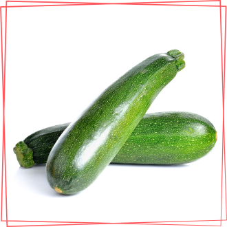
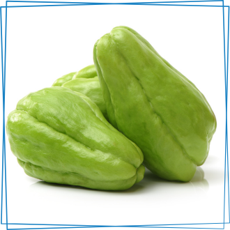
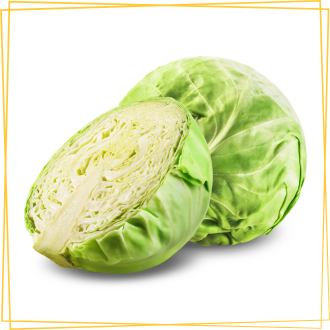
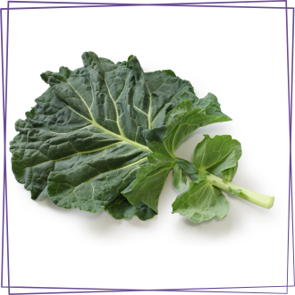
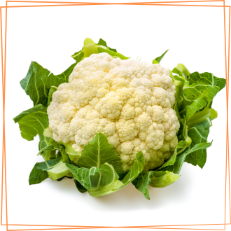
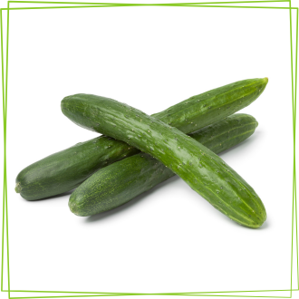

-
Abobrinha
Descrição
A abobrinha, também conhecida como courgette, é um vegetal de baixa caloria e rica em nutrientes essenciais. Composta principalmente por água (cerca de 95%), a abobrinha é uma excelente fonte de vitaminas, especialmente do complexo B (como folato, riboflavina e niacina), vitamina C e vitamina K. Além disso, é uma boa fonte de minerais como potássio, magnésio e fósforo. Em termos de macronutrientes, a abobrinha oferece pequenas quantidades de carboidratos, proteínas e fibras dietéticas, o que a torna uma opção leve e saudável para incluir em uma dieta equilibrada. Seu baixo teor de calorias e alto teor de água a tornam uma escolha popular em dietas de emagrecimento e para promover a hidratação.
-
Chuchu
Descrição
O chuchu é um vegetal de baixo teor calórico e rico em nutrientes essenciais. Composto principalmente por água (cerca de 92%), o chuchu oferece uma variedade de vitaminas e minerais importantes para a saúde. Ele é uma boa fonte de vitamina C, que é essencial para a imunidade, além de conter vitaminas do complexo B como folato, riboflavina e niacina. Em termos de minerais, o chuchu é especialmente rico em potássio, essencial para a função muscular e controle da pressão arterial, e também fornece quantidades significativas de cálcio, magnésio e fósforo. O chuchu é uma opção versátil na culinária por ser de fácil digestão e ter um sabor suave, tornando-se um complemento nutritivo para diversas receitas.
-
Repolho
Descrição
O repolho é um vegetal crucífero conhecido por sua composição nutricional balanceada e baixa caloria. É composto principalmente por água (cerca de 92%), sendo uma excelente fonte de vitaminas e minerais essenciais. Em termos de vitaminas, o repolho é especialmente rico em vitamina C, que é importante para a saúde da pele, sistema imunológico e cicatrização de feridas. Além disso, contém quantidades significativas de vitaminas do complexo B, como folato, riboflavina e niacina. Em relação aos minerais, o repolho oferece potássio, cálcio, magnésio e fósforo, todos essenciais para a função muscular, saúde óssea e equilíbrio eletrolítico. Adicionalmente, o repolho é uma boa fonte de fibras dietéticas, que são importantes para a saúde digestiva e para manter a saciedade. Com seu perfil nutricional completo e versatilidade na culinária, o repolho é uma escolha saudável para incluir em uma dieta equilibrada.
-
Couve
Descrição
A couve é um superalimento devido à sua densidade nutricional e baixo teor calórico. Este vegetal verde-escuro é uma excelente fonte de vitaminas, especialmente vitamina K, essencial para a coagulação sanguínea e saúde óssea, e vitamina C, que fortalece o sistema imunológico e promove a absorção de ferro. Além disso, a couve é rica em antioxidantes, como carotenoides e flavonoides, que ajudam a combater o estresse oxidativo no corpo. Em termos de minerais, é uma boa fonte de cálcio, fundamental para a saúde dos ossos e dentes, além de potássio, importante para a função muscular e controle da pressão arterial. A couve também fornece fibras dietéticas, que são benéficas para a saúde digestiva e contribuem para a sensação de saciedade. Consumida crua em saladas ou cozida em sopas e refogados, a couve é uma adição versátil e altamente nutritiva à alimentação diária.
-
Couve-flor
Descrição
A couve-flor é um vegetal crucífero com uma composição nutricional notável. É uma excelente fonte de vitaminas, especialmente vitamina C, que é essencial para a saúde imunológica e a pele, e também contém uma quantidade significativa de vitamina K, importante para a coagulação sanguínea e saúde óssea. Além disso, a couve-flor é rica em antioxidantes, como o betacaroteno e a quercetina, que ajudam a combater os danos causados pelos radicais livres no corpo. Em termos de minerais, ela fornece potássio, essencial para a saúde cardiovascular e muscular, e é uma boa fonte de folato, necessário para a síntese de DNA e crescimento celular. A couve-flor é também uma opção de baixa caloria e rica em fibras dietéticas, que contribuem para a saúde digestiva e para a sensação de saciedade. Versátil na culinária, pode ser consumida crua em saladas, cozida no vapor, assada, ou até mesmo transformada em arroz ou purê, oferecendo benefícios nutricionais e sabor em uma variedade de pratos.
-
Pepino Japonês
Descrição
O pepino japonês é um vegetal refrescante e nutritivo, com uma composição nutricional que o torna uma escolha saudável para diversas dietas. Composto principalmente por água (cerca de 96%), o pepino japonês é extremamente hidratante e de baixo teor calórico. É uma boa fonte de vitaminas, especialmente vitamina K, que é essencial para a coagulação sanguínea e saúde óssea, e vitamina C, que fortalece o sistema imunológico e promove a saúde da pele. Além disso, contém minerais como potássio, que ajuda na regulação da pressão arterial e na função muscular, e pequenas quantidades de cálcio e magnésio. O pepino japonês também é rico em antioxidantes, como os flavonoides e lignanas, que têm propriedades anti-inflamatórias e podem contribuir para a saúde cardiovascular. Com seu sabor suave e textura crocante, o pepino japonês é frequentemente consumido cru em saladas, sanduíches ou como um snack saudável, oferecendo benefícios nutricionais e refrescância em cada porção.